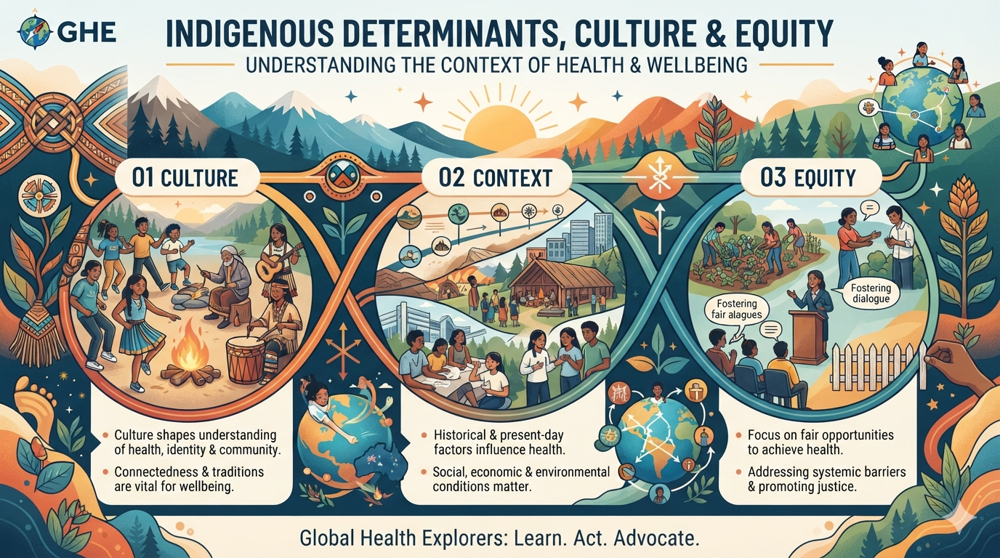

01
Explore
What do culture and identity mean to you? What helps people feel that they belong?
Start here →Health is shaped by more than individual choices. Culture, identity, relationships, history, place, opportunity and self-determination can all influence how people experience health and wellbeing.
Explore how the conditions surrounding Indigenous Peoples can create opportunities for health—or contribute to inequity—and why culture and identity belong at the centre of the conversation.

Culture and identity can be powerful sources of belonging, resilience, knowledge and wellbeing.
At the same time, health opportunities are shaped by the social, economic, environmental and political conditions in which people live. For Indigenous Peoples, these conditions are inseparable from histories and ongoing experiences of colonialism, displacement, discrimination and unequal access to resources and services.
Understanding these relationships helps us move away from blaming individuals or communities for health differences. Instead, we can ask a more useful question: what conditions are shaping people's opportunities for health?
People and communities can have different ways of living, knowing and understanding health. Difference itself is not a health problem. Ask what social, historical and structural conditions may be creating unequal opportunities for health.
Follow the pathway from personal understanding to wider questions about culture, identity, equity and the conditions that shape health.
What do culture and identity mean to you? What helps people feel that they belong?
Start here →Discover how culture, identity and social determinants interact with Indigenous health and wellbeing.
Learn more →Examine how history, power, systems and structural conditions can influence health equity.
Think deeper →Connect personal wellbeing with family, community, country and global systems.
Make connections →Consider how your understanding of culture, identity and equity has developed.
Reflect →Turn learning into respectful action that supports inclusion, equity and Indigenous leadership.
Take action →Identity is shaped through relationships, experiences, culture, place, language and many other dimensions of life.
Think about the communities and relationships that have influenced you. Your family, friends, language, school, neighbourhood, traditions, interests and experiences may all contribute to how you understand yourself and your place in the world.
For Indigenous Peoples, identity can also be deeply connected with community, ancestry, language, land, culture and collective histories. These connections are diverse and should never be reduced to a single Indigenous experience.
Culture is not simply a collection of traditions. It can shape identity, relationships, knowledge, belonging and wellbeing.
Indigenous cultures are diverse. Different Peoples and communities have their own languages, histories, teachings, practices and relationships with land and place.
Cultural continuity and connection can support wellbeing, while cultural disruption, discrimination and loss of control over cultural life can contribute to inequity.
A sense of who we are and where we belong can influence confidence, connection and wellbeing.
Language can carry knowledge, history, relationships and cultural continuity across generations.
Cultural practices, knowledge and traditions can support belonging, resilience and collective wellbeing.
Having meaningful control over decisions affecting communities is central to equity and wellbeing.
Health equity requires us to look beyond individual behaviour and examine the systems and conditions that shape opportunity.
Social determinants of health include the conditions in which people are born, grow, learn, work, live and age. These conditions influence exposure to risks, access to resources and opportunities to live healthy lives.
For Indigenous Peoples, determinants of health can be influenced by historical and continuing processes such as colonialism, dispossession, racism, forced cultural disruption and unequal access to services and infrastructure.
Health equity asks whether people have fair opportunities to achieve health—not whether everyone has exactly the same circumstances.
Understanding the causes of inequity helps us identify where systems, policies and communities can act.
Culture and health are connected across multiple levels. Follow the pathway from personal experience to wider systems.
Identity, experiences, knowledge, choices and sense of wellbeing.
Relationships, belonging, support, shared knowledge and everyday experiences.
Culture, institutions, services, collective identity and community leadership.
Policies, systems, history, resources, rights and opportunities for equity.
Global systems, Indigenous Peoples, shared learning and global responsibility.
The social determinants of health help us understand why opportunities for health are not distributed equally.
Looking through an Indigenous health equity lens means considering both immediate living conditions and the historical, structural and political forces that influence those conditions.
Indigenous health equity is connected with global efforts to reduce inequalities, improve wellbeing and create inclusive and sustainable communities.
Strong global health leadership requires us to understand both evidence and context. It also requires humility: communities are not simply subjects of research—they hold knowledge, experience and leadership.
Evidence becomes more meaningful when the voices and experiences of affected communities are considered.
Health statistics describe patterns. They do not, by themselves, explain the historical and social conditions that produced them.
Different knowledge systems can contribute important understandings of health, relationships, place and wellbeing.
Do not define communities only through problems or disparities. Recognize strengths, resilience, leadership and solutions.
Take a moment to connect culture, identity, determinants and health equity.
How can culture and identity contribute to wellbeing?
What conditions around a person can influence their opportunities for health?
How can we avoid describing health inequities as characteristics of people rather than consequences of unequal conditions?
Start by noticing the conditions that shape health. Challenge stereotypes and deficit thinking, listen to Indigenous voices, respect different ways of knowing and support environments where people and communities can exercise meaningful choice and leadership.
Continue the Journey